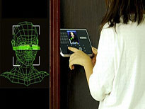
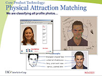

Bar
You can use this technology at the bar to pay off your tab when you're too excited to remember where you left your wallet
Door Access Systems
Biometric door access control system dramatically increases identification accuracy by adding full body motion analytics to facial recognition. It quickly identifies authorized people as they approach the door.
Online Dating
could benefit from facial recognition as some have complained and has subsequently tarnished the name of online dating sites. Facial recognition could bring back that credibility to the service
Security Systems
Using biometrics facial scans in security points offers alot of potential benefits to policing departments and other security services. It offers immense options to maintain surveillance without physical enforcement.
Unlocking mobile devices

Passcodes and fingerprint scans may soon be obsolete: locking and unlocking a mobile device using facial recognition. It's a biometric alternative to Touch ID, Apple's fingerprint scanner.
Vending Machines

Facial recognition could ease the issue of the need to carry around clingy change around in your pocket. Besides that it also provides immense convinience when you dont need to have a a wallet to access such services an unparalled level of convinience.
Grocery POS
Near-field communication (NFC) is often hailed as the payment system of the future, but what if you didn't even need a mobile device in your pocket? Resorting facial recognition, an installed point-of-sale camera snaps your mug while you do so to access your cloud-based wallet. That means that all you have to do is hit a button confirming the purchase and be on your merry way,
Gas POS
Employing biometric technology at gas POS systems, confers a level of convinience and secure checkout. It definately speeds up service as you don't have to clarify your zip-code to gas service-men a la NJ.